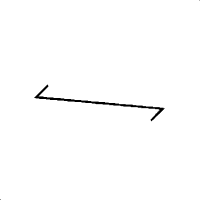

Orlando |
||||||||
|
|
|
|||||||
Icono | Definición de los iconos | ||||||||||
|---|---|---|---|---|---|---|---|---|---|---|---|
|
|
Advertencia: Este vehículo está equipado con un sistema de sujeción inflable suplementario (SIR). Si no sigue el procedimiento correcto, podrá ocurrir lo siguiente: | ||||||||||
|
 |
Nota: Los pares trenzados proveen un apantallamiento efectivo que ayuda a proteger los sensibles componentes electrónicos de las interferencias eléctricas. Para impedir que las interferencias eléctricas degraden el rendimiento de los componentes conectados, debe observar la especificación correcta al realizar reparaciones en los cables trenzados mostrados
|
| © Copyright Chevrolet. All rights reserved |